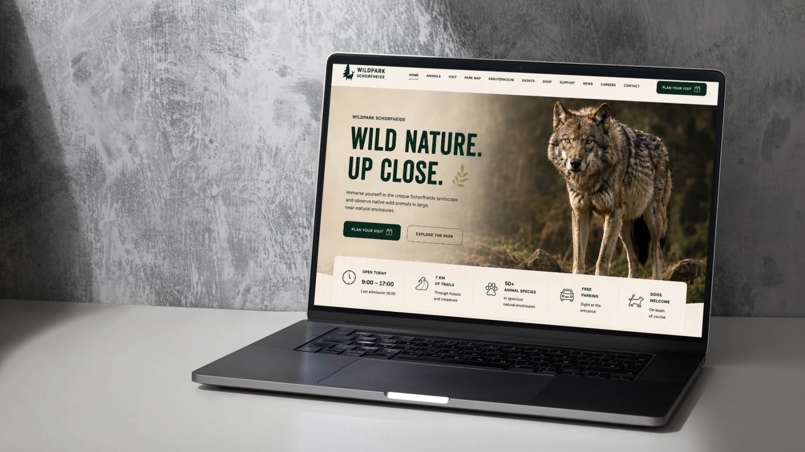
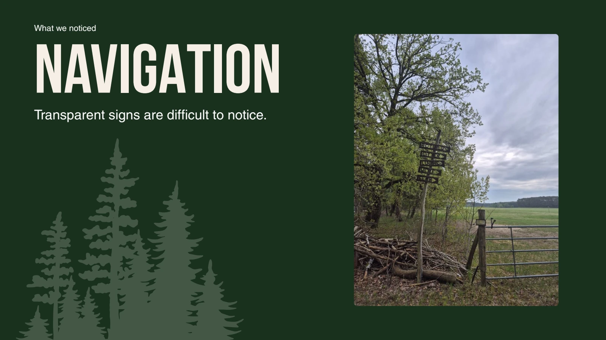
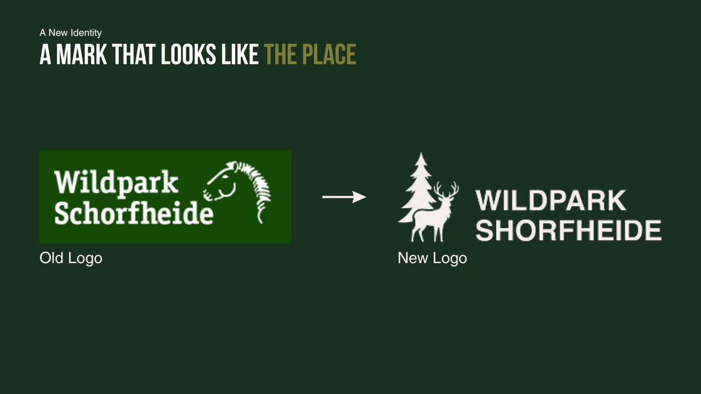
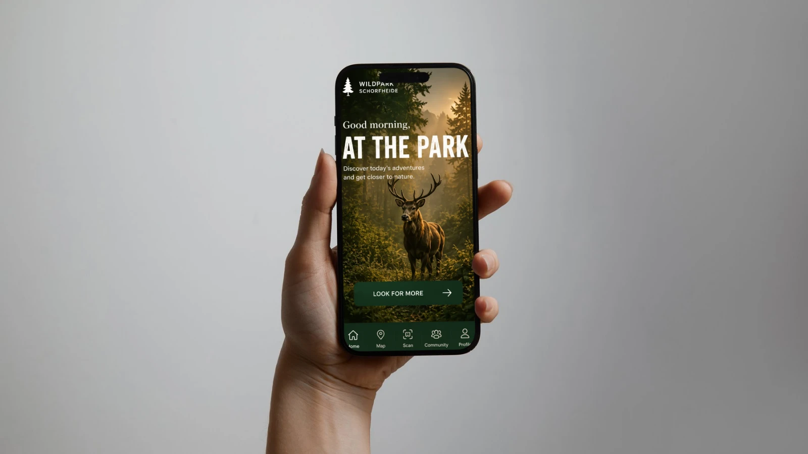
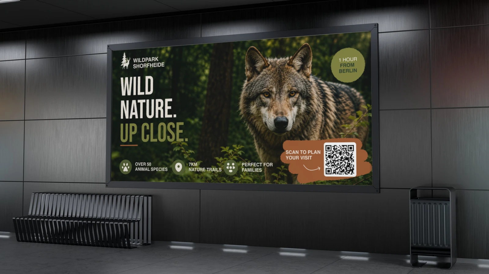
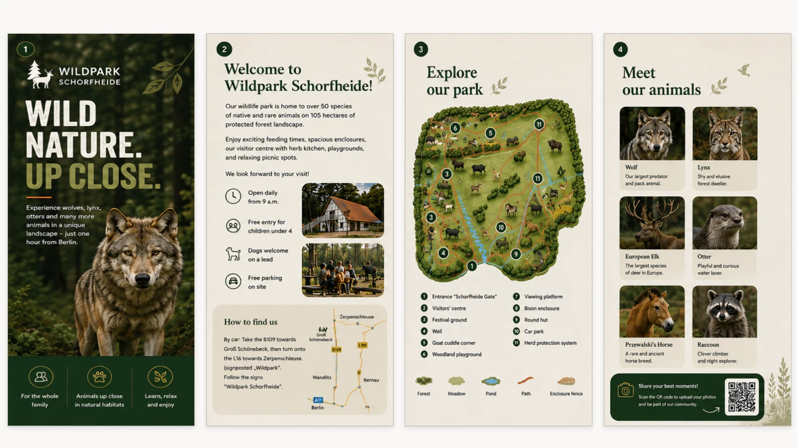

Plan the visit
An editorial website organizes key visitor information.
Human Experience Design · Free project
A connected visitor-experience concept spanning the park website, an app, wayfinding, and print.

01 · THE CHALLENGE
A park visit revealed hard-to-see signs, an information-heavy website, and gaps between visitor touchpoints. The project explored how a clearer identity and information hierarchy could support the whole visit.
PROJECT GOALConnect planning, arrival, and discovery through a coherent visitor experience.
02 · UNDERSTANDING

Transparent signs were difficult to notice. A white backing offered a practical visibility improvement without replacing the entire signage system.
03 · EXPLORATION

The exploration moved from on-site observations to a nature-inspired identity, then extended that direction across posters, brochures, a website, and a companion app.
04 · FINAL SOLUTION



An editorial website organizes key visitor information.
The app concept supports navigation and discovery.
A shared identity connects digital and printed materials.
WANT THE DETAILS?
Explore the original university presentation and supporting process.
View presentation ↗05 · REFLECTION
The final concept connects physical and digital touchpoints. The before-and-after comparison describes the intended design improvements; visitor impact would need to be tested in use.